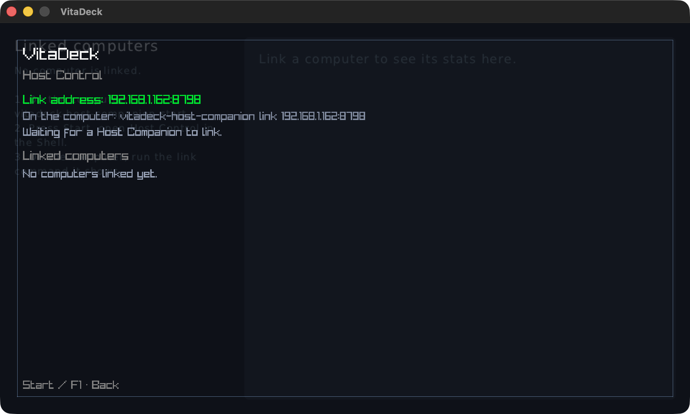
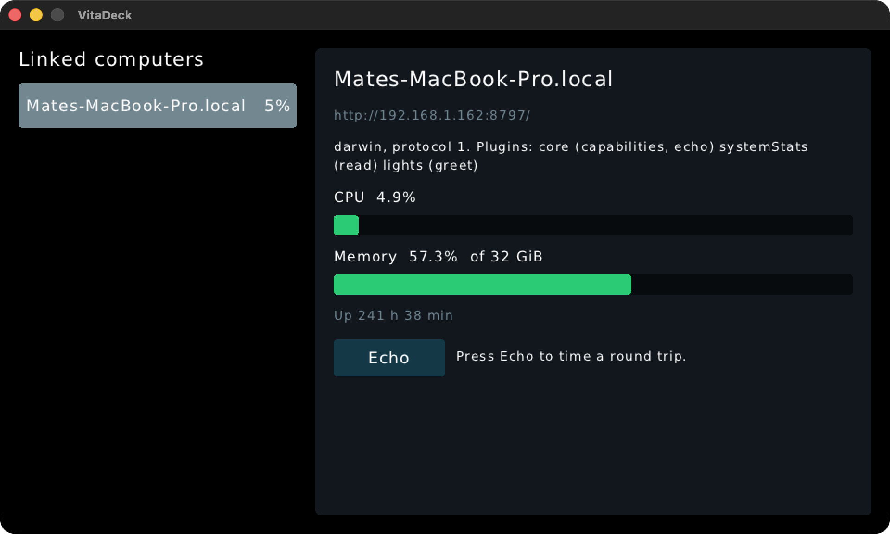
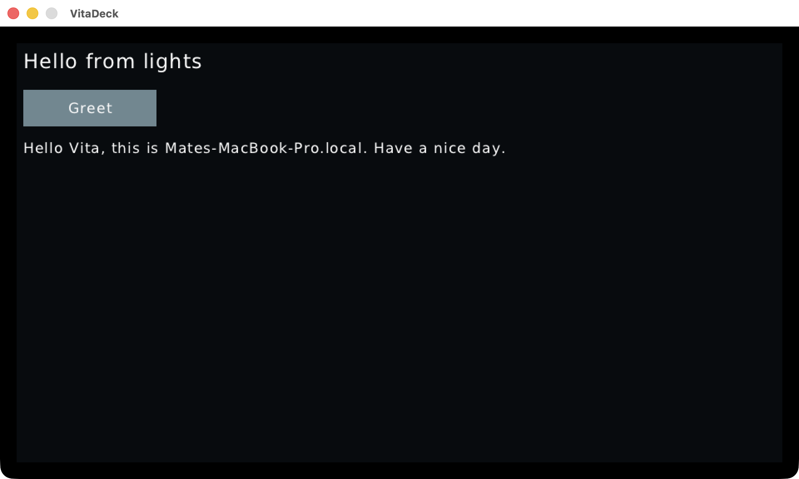
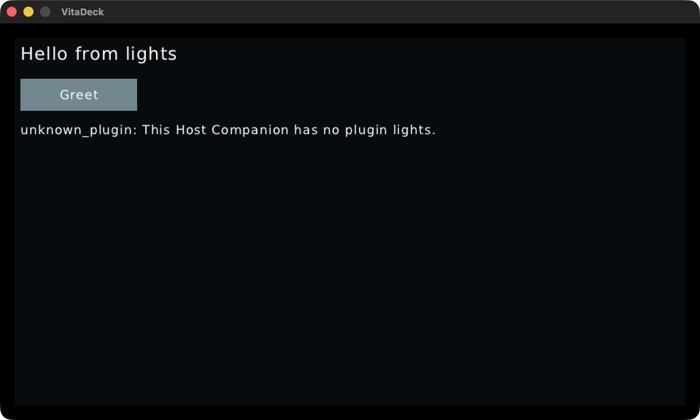

Both packages are packed. The companion is installed globally with npm i -g into a temp prefix. lights is scaffolded outside the repo with vitadeck create lights --host-plugin.


vitadeck-host-companion install dist/lights.vdplugin.zip, the scaffolded app calls its own plugin, which reads files/motd.txt from its package
npm run host (--plugin ./dist), edit host/files/motd.txt and run vitadeck build: the companion reloads with no restart